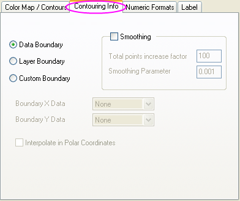
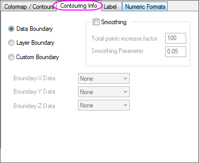
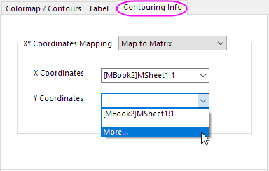

Die Registerkarte Kontur-Info (Details Zeichnung)
PD-Dialog-ContourInfo-Tab
In Origin können Konturdiagramme mit Hilfe einer von Origins zahlreichen Algorithmen für Matrixkonvertierung und Gridding oder durch direktes Zeichnen der XYZ-Arbeitsblattdaten erstellt werden. Eine Erläuterung der Algorithmen für die Konturerstellung finden Sie unter Algorithmusseite für Konturdiagramm. Hinweis: Vor Origin 2016 wurden XYZ (Arbeitsblattdaten) normiert, bevor Konturdiagramme erzeugt wurden; seit Origin 2016 werden die rohen X- und Y-Datenwerte verwendet. Siehe Daten für XYZ-Kontur-/Oberflächendiagramm normieren.
Wenn Arbeitsblattdaten direkt gezeichnet werden (ohne Gridding), wird das Dialogfeld Details des Konturdiagramms als zusätzliche Registerkarte angezeigt -- die Registerkarte Konturinfo (beachten Sie, dass diese Bedienelemente auch für theta-r-Konturdiagramme verwendet werden).
| : |
: |
| Registerkarte Allgemeine Konturinfo |
Registerkarte Allgemeine Konturinfo für ternäres Konturdiagramm |
Wenn die Matrixdaten als Konturdiagramm gezeichnet werden, kann die Abbildung der XY-Koordinaten auf der Registerkarte Konturinfo festgelegt werden.
| : |
| Registerkarte Konturinfo für Matrixdatensatz |
Rand
Mit den Bedienelementen für Grenzen kann man die Kanten des XYZ-Konturdiagramms maskieren. Es gibt drei Möglichkeiten:
| Datengrenzen |
Die Rohdatengrenzen Kann auch durch Glättungsparameter beeinflusst werden.
|
| Layergrenzen |
Der durch Extrapolation von Origin festgelegte Layerrahmen
Hinweis:
- Wenn die Layergrenze ausgewählt ist, wird der Raum zwischen Daten und Grenze durch Extrapolation gefüllt. In diesem Fall muss der Glättungsparameter gesetzt werden.
- Die maximale Anzahl der Datenpunkte für die Tri-Kontur-Glättung wird mit der Systemvariable @TCS gesteuert. Der Standardwert ist 4000. Darüber hinaus wird keine Glättung durchgeführt. Wenn also die Anzahl der Punkte in der Kontur größer als 4000 ist, wird die Layergrenze nicht empfohlen.
|
| benutzerdefinierten Grenzen |
Eine neue Grenze durch Festlegen von X-Grenzdaten und Y-Grenzdaten (und Z-Grenzdaten) benutzerdefiniert anpassen.
|
_Contouring_Info_Tab/Tip_icon.png) |
Vor Origin 2018 SR0 erzeugte die Anwendung einer benutzerdefinierten Grenze manchmal eine imperfekte Füllung an den Rändern der Grenze. Dies wurde in 2018 verbessert. Der Anwender kann das vorherige Verhalten beim Füllen der Kontur mit Hilfe der Systemvariable @TCSM wiederherstellen.
_Contouring_Info_Tab/Tri_contour_smooth_mode.png)
|
Glättung
Führen Sie eine XYZ-Interpolation durch, um das Konturdiagramm mit Hilfe des Algorithmus Thin Plate Spline (TPS) zu glätten.
Es stehen Bedienelemente wie unten zur Verfügung.
| Erhöhungsfaktor der Gesamtpunkte |
Erweitern Sie die Anzahl der gezeichneten Punkte durch Multiplizieren der ursprünglichen Punktanzahl mit diesem Faktor. Diese Zahl sollte nicht kleiner als 1 sein.
|
| Glättungsparameter |
Der Glättungsparameter Thin Plate Spline Bestimmt den Glättungsgrad. Eine kleinere Anzahl erzeugt eine geringere Glättung.
|
|
Für Origin 2017 und jede ältere Version galt, sobald Sie die Option Benutzerdefinierte Grenze ausgewählt haben, wird das Kontrollkästchen Glätten standardmäßig aktiviert und ausgegraut. Die Glättung kann nun nicht mehr ausgeschaltet werden.
Manchmal werden Sie jedoch feststellen, dass die Farbskala und die Farbebenen sich nach Anwenden der benutzerdefinierten Grenze geändert haben. Um dies zu verhindern, müssen Sie die Systemvariable @TCS verwenden, um die maximale Anzahl der Datenpunkte für die Tri-Kontur-Glättung so klein wie möglich festzulegen. Mit @tcs=0 zum Beispiel wird die Glättung visuell "ausgeschaltet".
|
In polaren Koordinaten interpolieren
Wenn das Konturdiagramm ein polares Konturdiagramm ist, wird diese Registerkarte aktiviert.
Abbildung der XY-Koordinaten
- Auf Arbeitsblattspalte abbilden
Wählen Sie in den Auswahllisten X-Koordinaten und Y-Koordinaten die Option Mehr ..., um den Dialog Datensatzbrowser zu öffnen und eine Spalte im Arbeitsblatt als XY-Koordinaten festzulegen.
In den Auswahllisten X-Koordinaten und Y-Koordinaten wird das Matrixobjekt mit dem gleichen Matrixblatt aufgeführt. Wählen Sie die Option Mehr..., um den Dialog Datensatzbrowser zu öffnen und eine andere Matrix als XY-Koordinaten festzulegen.